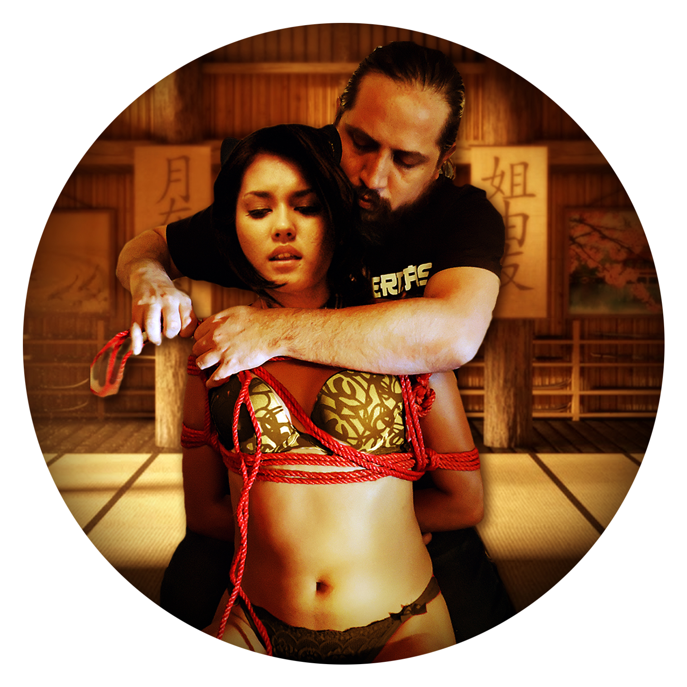
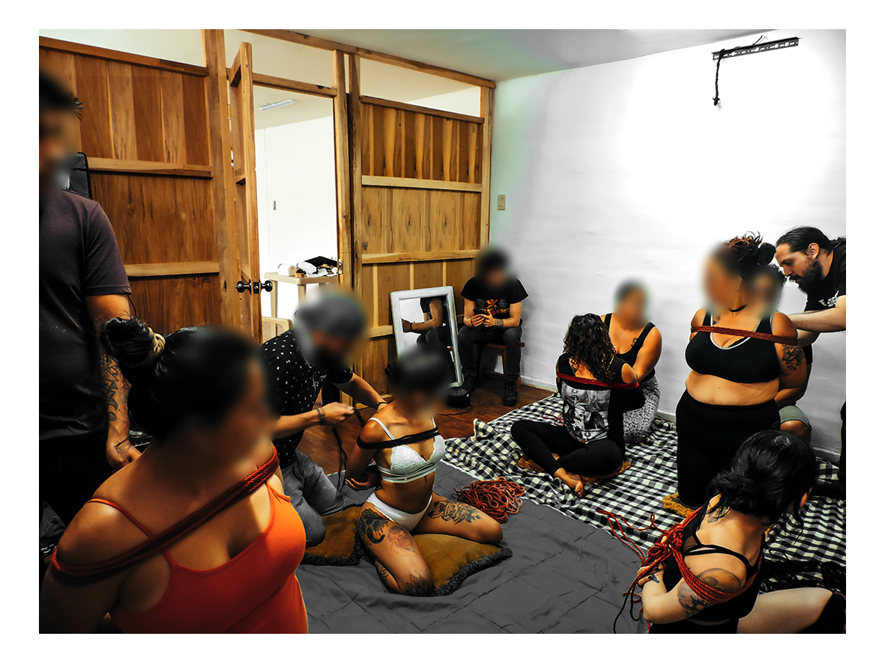
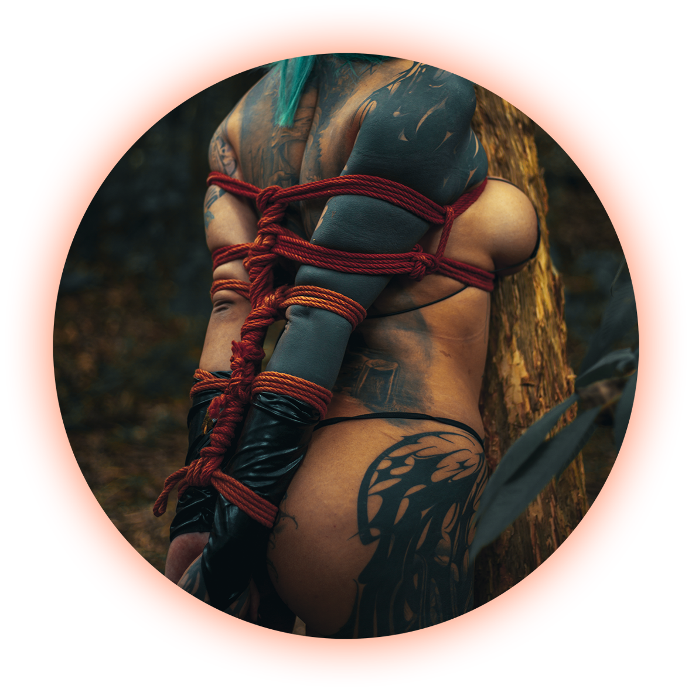
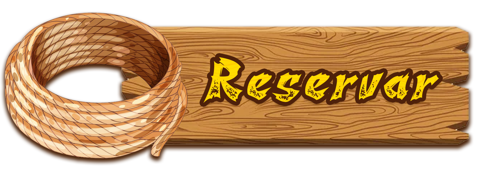

¿Qué es el Shibari?

El Shibari es una práctica de inmovilización con cuerdas derivada de las técnicas de sujeción del Hojojutsu, un arte marcial japonés utilizado en el Japón feudal para capturar, asegurar y transportar prisioneros. En ese contexto histórico, la cuerda formaba parte de un sistema formal de control físico donde los patrones de atadura indicaban rango social, situación legal del detenido y autoridad de quien ejecutaba la sujeción.
Durante el siglo XX, estas técnicas de cuerda fueron reinterpretadas dentro de ciertos círculos culturales en Japón y comenzaron a desarrollarse en un contexto erótico, evolucionando hacia lo que hoy se conoce como Shibari. En esta forma moderna, la cuerda se emplea para crear estructuras de inmovilización asociadas a dinámicas sadomasoquistas de dominación sexual, donde la restricción física, la tensión de las cuerdas y la relación de poder entre quien ata y quien es atado constituyen los elementos centrales de la práctica.
Quiénes somos
"Piel y Cuerdas" es un espacio educativo dedicado a la enseñanza del Shibari en Quito, Ecuador. Nuestro objetivo es transmitir esta práctica desde una perspectiva técnica, responsable y respetuosa con su origen cultural.
El proyecto busca ofrecer un entorno que desafíe la nociones pre-concebidas de los participantes y en el que estos puedan aprender progresivamente las bases del manejo de cuerda, la comunicación y los principios de interacción psicológica de Dominación/sumisión que forman parte de esta disciplina. Al mismo tiempo, reconocemos el origen y la naturaleza sadomasoquista del Shibari moderno, y no diluimos ni ocultamos ese elemento para adaptarlo a sensibilidades del público general. Nuestro enfoque consiste en abordar la práctica con claridad, rigor técnico y responsabilidad.
Nuestro fundador
Después de años de práctica dentro del mundo del sadomasoquismo y del Shibari, Christian Carvajal decide fundar "Piel y Cuerdas" al reconocer la ausencia de espacios serios donde estas prácticas puedan ser exploradas con claridad y madurez dentro de la sociedad ecuatoriana. Su experiencia personal le permitió constatar el contraste entre el interés real que muchas personas sienten por la sexualidad extrema y el clima social marcadamente conservador que suele rodear estas conversaciones en ciudades como Quito.
Con formación académica en psicología, su objetivo es ofrecer un espacio educativo que permita comprender las dimensiones físicas, psicológicas y emocionales que intervienen en las dinámicas de dominación y sumisión. El proyecto busca enseñar con honestidad intelectual y rigor técnico, sin diluir ni disfrazar la naturaleza sadomasoquista del Shibari para hacerla más aceptable al público general.
Enfoque educativo

La enseñanza se basa en el desarrollo progresivo de habilidades técnicas, con especial atención en la seguridad, el consentimiento informado y la comunicación entre quienes practican.
Programa de formación
- Fundamentos del manejo de cuerda
- Seguridad y protocolos de consentimiento
- Estructuras básicas de atadura
- Comunicación entre rigger y modelo
- Desarrollo progresivo de técnica

